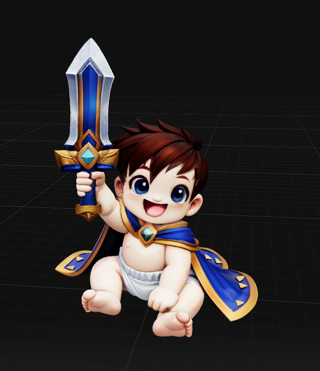
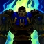
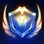
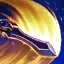
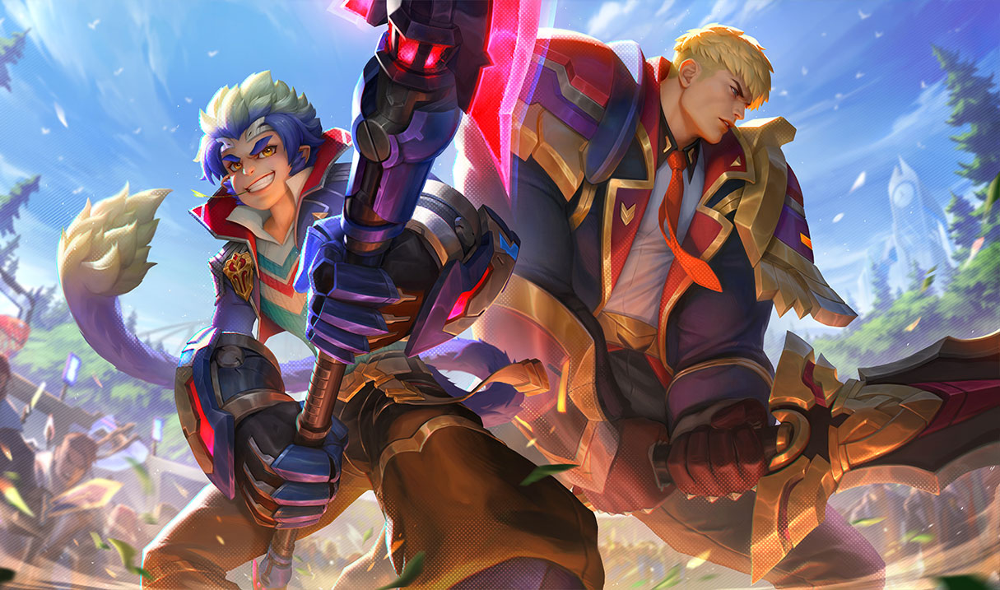

Lore
Garen es un guerrero notable de Demacia y uno de los miembros más destacados de la Vanguardia Impertérrita. Hijo de la familia Crownguard, su vida está marcada por el deber y la defensa de los ideales demacianos: honor, disciplina y protección de los inocentes. En el campo de batalla se le reconoce por su armadura resistente a la magia y por empuñar una espada capaz de decantar combates, enfrentándose a magos y fuerzas enemigas con decisión. A lo largo de diversas campañas contra amenazas como Noxus y en relatos canónicos y cómics, Garen ha demostrado tanto su capacidad militar como las dudas y retos personales que acompañan a quienes asumen el peso de la responsabilidad pública. Su figura se mantiene como símbolo de liderazgo y coraje dentro del universo de Runaterra.

Un ejemplo a seguir

Garen encarna la disciplina, la lealtad y el sentido del deber característicos de Demacia. Su liderazgo es directo y ejemplar: prioriza el bienestar colectivo por encima de la gloria personal y guía a sus compañeros con firmeza y empatía. Aunque su enfoque es tradicional y muchas veces austero, también muestra compasión y protección hacia los vulnerables, y en ocasiones enfrenta dilemas morales cuando las políticas y la realidad del combate chocan. Esa mezcla de convicción, responsabilidad y humanidad hace de Garen una figura respetada tanto en tiempos de paz como en guerra.
Niñez y Juventud
Nacido en Alto Silvermere dentro de la influyente familia Crownguard, Garen recibió una formación marcial y ética desde niño. Su educación combinó entrenamiento físico exigente con una enseñanza orientada al servicio público, la disciplina y el honor: valores que forjaron su carácter y lo impulsaron a alistarse en la Vanguardia Impertérrita. Creció junto a su hermana Lux, con quien comparte vínculos afectivos y tensiones familiares, y pronto demostró aptitudes para liderar y proteger a su gente en tiempos convulsos.

Relaciones

Garen mantiene vínculos estrechos dentro de la sociedad demaciana: su relación más íntima es con Lux, su hermana, cuya naturaleza mágica y decisiones políticas han generado conflictos y protección fraternal a lo largo del tiempo. También ha colaborado con figuras como Jarvan IV en campañas oficiales del reino, y mantiene una relación profesional de respeto con campeones como Xin Zhao o Fiora. En el terreno de los enfrentamientos, Garen suele chocar con campeones de naciones rivales como Noxus, pero sus lazos muestran su faceta más humana: camaradería, lealtad y responsabilidad compartida.
Habilidades de Combate
Clickea para ver detalles de cada una

Perseverancia
Regenera salud pasivamente.
Tiempo
Golpe Decisivo
Silencia y castiga.
Q
Coraje
Resistencia pura.
W
Juicio
Torbellino de acero.
E
Justicia
Ejecución divina.
RSkins

Battle Academia
Garen en un estilo inspirado en academias de élite y combate futurista.